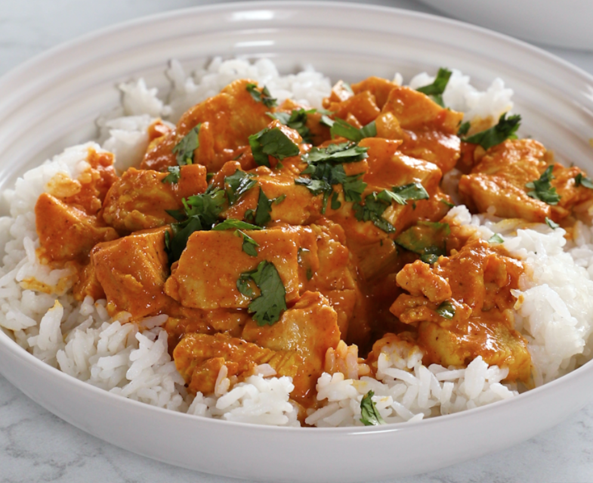

Home
Chicken Tikka Masala

Chicken Tikka Masala
Chicken Tikka Masala is a rich and flavorful dish that combines marinated chicken pieces with a creamy tomato-based sauce. It’s one of the most popular Indian-inspired dishes worldwide, known for its balance of smoky spices, tangy tomatoes, and velvety cream. Perfect with rice or naan, it’s a dish that turns any dinner into a feast.
What makes Chicken Tikka Masala special is the layering of flavors. The chicken is marinated with yogurt and spices, giving it tenderness and depth, while the sauce brings warmth from garam masala, cumin, and coriander. Together, they create a dish that’s both comforting and bold.
Ingredients
For the Chicken Marinade
- 500g (1 lb) boneless chicken thighs or breasts, cut into chunks
- 1 cup plain yogurt
- 2 garlic cloves, minced
- 1 tbsp grated fresh ginger
- 2 tsp garam masala
- 1 tsp cumin
- 1 tsp paprika
- 1 tsp salt
For the Sauce
- 2 tbsp oil or butter
- 1 onion, chopped
- 2 garlic cloves, minced
- 1 tbsp grated ginger
- 2 tsp garam masala
- 1 tsp cumin
- 1 tsp ground coriander
- 1 tsp paprika
- 1 can (400g/14oz) crushed tomatoes
- 1 cup heavy cream (or coconut milk for lighter option)
- Salt, to taste
- Fresh cilantro, for garnish
Steps
- Marinate the chicken: Mix yogurt, garlic, ginger, and spices. Coat chicken pieces and let sit at least 30 minutes (or overnight for best flavor).
- Cook the chicken: Grill, broil, or pan-fry the marinated chicken until browned and cooked through. Set aside.
- Make the sauce: In a large pan, heat oil or butter. Cook onion until soft, then add garlic, ginger, and spices. Stir in tomatoes and simmer 10 minutes.
- Finish the dish: Add cream and cooked chicken. Simmer gently for 10 minutes until the sauce thickens and flavors come together.
- Serve: Garnish with fresh cilantro and serve hot with rice or naan.